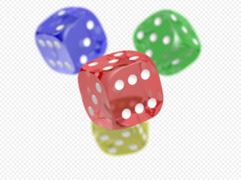

(Compuserve GIF) o Graphics Interchange Format) es un formato gráfico utilizado
ampliamente en la World Wide Web tanto para imágenes como para animaciones.
El formato fué creado por Compuserve en 1987 para dotar de un formato de imagen a color
para sus áreas de descarga de ficheros, sustituyendo su temprano formato RLE en blanco y
negro. GIF llegó a ser muy popular porque podía usar el algoritmo de compresión LZW (Lempel
Ziv Welch) para realizar la compresión de la imagen, que era más eficiente que la que el
algoritmo Run Length Encoding (RLE) usado para los formatos PCX y MacPaint. Por la tanto,
imágenes de gran tamaño podían ser descargadas en un razonable periodo de tiempo, incluso
con modems muy lentos.
GIF es un formato sin pérdida de calidad, siempre que partamos de imágenes de 256
colores o menos. Una imagen de alta calidad, como una imagen de color verdadero
(profundidad de color de 24 bits o superior) debería reducir literalmente el número de
colores mostrados para adaptarla a ese formato, y por lo tanto existiría una pérdida de calidad.

"JPEG" significa "Joint Photographic Experts Group", nombre de la comisión que creó
la norma, la cual fue integrada desde sus inicios por la fusión de varias agrupaciones en un
intento de compartir y desarrollar su experiencia en la digitalización de imágenes. La ISO,
tres años antes (abril de 1983), había iniciado sus investigaciones en el área.
Es un algoritmo de compresión con pérdida. Esto significa que al descomprimir la imagen no
obtenemos exactamente la misma imagen que teníamos antes de la compresión.
Una de las características que hacen muy flexible el JPEG es el poder ajustar el grado de
compresión. Si especificamos una compresión muy alta se perderá una cantidad significativa
de calidad, pero obtendremos archivos de pequeño tamaño. Con una tasa de compresión baja
obtenemos una calidad muy parecida a la del original, y un archivo mayor.
Esta pérdida de calidad se acumula. Esto significa que si comprime una imagen y la
descomprime obtendrá una calidad de imagen, pero si vuelve a comprimirla y descomprimirla
otra vez obtendrá una pérdida mayor. Cada vez que comprima y descomprima la imagen, ésta
perderá algo de calidad. La compresión con pérdida no es conveniente en imágenes o gráficos
que tengan textos o líneas y sobre todo para archivos que contengan grandes áreas de colores
sólidos.
El algoritmo de compresión JPEG se basa en dos defectos visuales del ojo humano, uno es el
hecho de que es mucho más sensible al cambio en la luminancia que en la crominancia, es
decir, notamos más claramente los cambios de brillo que de color.El otro es que notamos con
más facilidad pequeños cambios de brillo en zonas homogéneas que en zonas donde la
variación es grande, por ejemplo en los bordes de los cuerpos de los objetos.
(Portable Network Graphics) es un formato gráfico basado en un algoritmo de compresión sin
pérdida para bitmaps no sujeto a patentes. Este formato fue desarrollado en buena parte para
solventar las deficiencias del formato GIF y permite almacenar imágenes con una mayor
profundidad de contraste y otros importantes datos.
Las imágenes PNG usan la extensión (.png) y han obtenido un tipo MIME (image/png)
aprobado el 14 de octubre de 1996.
Las motivaciones para crear el formato PNG se generaron en 1995, después de que Unisys
anunciara que haría cumplir la patente de software del algoritmo de compresión de datos LZW
utilizado por el GIF (patente de EE.UU. 4.558.302 y otras alrededor del globo). Había otros
problemas con el formato GIF que hacían deseable un cambio, por ejemplo su limitación a
paletas de 8 bits de 256 colores como máximo, cuando los ordenadores ya soportaban miles o
millones de colores.
Originalmente PNG era un acrónimo recursivo que significaba PNG no es GIF (PNG's Not GIF).
Aunque el GIF soporta animación, el PNG se desarrolló como un formato de imagen estático
y se creó el formato MNG como su variante animada.
El PNG ganó mayor popularidad en agosto de 1999 cuando Unisys puso fin a su política de
licencias de patente libres de derechos para los desarrolladores de software libre o no
comercial.
Especificación de la versión 1.0 de PNG fue lanzada el 1 de julio de 1996 y después apareció
como RFC 2083. Rápidamente se convirtió en una recomendación W3C el 1 de octubre de
1996.
Versión 1.1 con algunos pequeños cambios y con 3 nuevas extensiones o "chunks" fue liberada
el 31 de diciembre de 1998.
Versión 1.2. Nueva extensión. Liberada el 11 de agosto de 1999.
Nueva versión, ligeramente diferente de la anterior y con una nueva extensión. Actualmente
PNG es un estándar internacional (ISO/IEC 15948:2003), también recomendado por la W3C el
10 de noviembre de 2003.
El estandard a partir de 2004 es (ISO/IEC 15948:2004).
El método de compresión utilizado por el PNG es conocido como deflación (en inglés "Deflate
algorithm"). También existen métodos de filtrado. En la especificación 1.2 se define un único
tipo de filtro, que incluye 5 modos de predicción del valor del pixel, que resulta muy útil para
mejorar la compresión, donde se elige para cada línea de la imagen (scanline) un método de
filtrado que predice el color de cada píxel basándose en los colores de los píxeles previos
y resta al color del píxel actual, el color pronosticado. Los cinco métodos son: None, Sub, Up,
Average y Paeth.
medida de la imagen de entrada. El algoritmo de compresión puede encargarse de la adecuada
elección del método que mayor reducción ofrezca.
El tipo de media MIME para PNG es "image/png" (aprobado el 14 de octubre de 1996)
PNG no ofrece animación. MNG es un formato de imagen que soporta animación y está
basado en las ideas y en algunas secciones de PNG, pero es un sistema complejo y no permite
el visionado de una sola imagen cosa que si hace GIF. APNG es otro formato basado en PNG
que soporta animación y es más sencillo que MNG. APNG soporta el visionado de una sola
imagen en caso de que el decodificador no entienda este formato. En todo caso ninguno de
estos formatos es ampliamente usado.
En la mayoría de los casos, PNG comprime mejor que el formato GIF, aunque algunas
implementaciones (véase Photoshop) realizan una mala selección de los métodos de filtrado y
se generan ficheros de mayor tamaño.
El PNG admite, al igual que el GIF, imágenes indexadas con transparencia de 1 bit o "binaria".
Este tipo de transparencia no requiere de un canal adicional y únicamente admite que un color de la paleta
aparezca transparente al 100%.
El PNG admite formatos con una profundidad de color de millones de colores (color verdadero)
y canal alfa, lo que proporciona unos rangos de color mucho más ricos y precisos que el GIF
y disponer de valores de transparencia intermedios. Desafortunadamente, esto permite que se
compare erróneamente PNGs de color verdadero con un GIF de color indexado (256 colores)
GIF soporta animación y PNG no. (ver sección de animación, arriba)
Imagen compuesta comparando JPEG y PNG: nótese los artificios en la imagen JPEG versus
el fondo en color sólido para la misma imagen en PNG.
PNG y JPEG son formatos que están diseñados para funciones diferentes, por lo que
únicamente se puede realizar una comparación generalista.
JPEG tiene una relación de compresión enorme en perjuicio de la calidad de la imagen, ideal
para imágenes de gran tamaño y fotografías. No admite trasparencia.
PNG es un formato sin perdida de calidad con una excelente compresión, ideal para imágenes
formadas por grandes áreas de color plano o con pocas variaciones de color. Admite canal alfa
y algunos atributos extra como la corrección gamma.
Pese a que las carácteristicas técnicas y de compresión hacen del PNG un formato ideal para
sustituir al GIF, su adopción ha sido muy lenta debido en parte a comparaciones erróneas y
algunas desventajas técnicas:
No está soportado por algunos navegadores muy viejos (sin embargo estos navegadores son
muy raros hoy en día).
No admite animación.
La administración de color fallaba en algunos navegadores (actualmente no es muy importante
y se puede evitar).
Internet Explorer 6 no soporta PNGs transparentes. Habría que matizar un punto. Internet
Explorer 6 e inferiores admiten transparencias binarias como en el GIF, pero fallan al mostrar
imágenes con canal alfa. Eso se debe a que el paquete que especifica el canal alfa es opcional
(tRNS) según la especificación PNG, sin embargo Internet Explorer 7 si los admite.
Las imágenes en PNG pesan más que los GIF. De nuevo, no es cierto. Esta falsa creencia es
debido a que se compara con PNGs mal codificados o de 32 bits con GIFs de 256 colores.